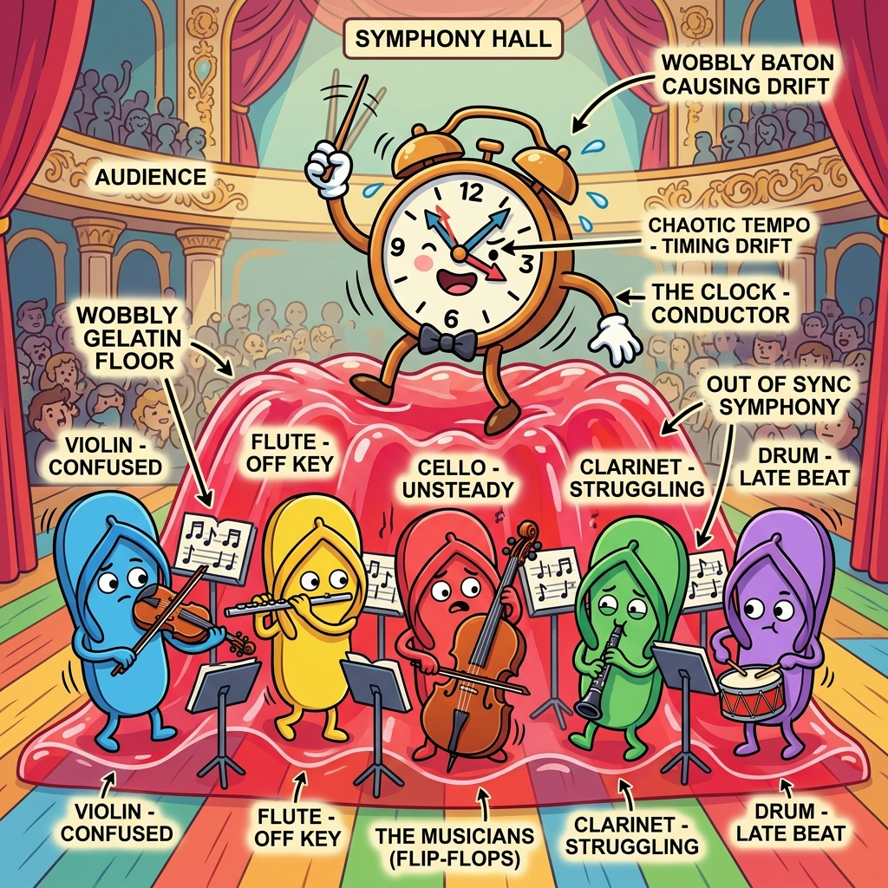

Section 2.1: The Setup and Hold Ballet
If FPGA design is a theater production, timing closure is the choreography. You can have the most beautiful script (HDL) and the most expensive actors (HBM/SSI), but if your dancers (data signals) don't hit their marks at the exact same time as the music (the clock), the whole show falls apart. Welcome to the setup and hold ballet—the place where most FPGA dreams go to die.
Most beginners think timing is about "speed." They think, "My design runs at 200MHz, so I'm fast." But timing isn't about speed; it's about certainty. It’s about ensuring that every single flip-flop in your massive silicon city gets its data at exactly the right moment. If you're off by even a few picoseconds, your data becomes "metastable," and your design enters a state of digital madness.
The Invisible Clock Edge
Think of a flip-flop as a camera. The clock edge is the shutter. When the shutter clicks, the camera captures whatever is in front of it. Setup time is the requirement that the subject (the data) must be standing still in front of the lens before the shutter clicks. Hold time is the requirement that the subject must stay still for a brief moment after the shutter clicks to make sure the image isn't blurred.
In a modern AMD FPGA, these times are measured in picoseconds. To a human, a picosecond is nothing. To a signal traveling at a significant fraction of the speed of light, a picosecond is enough time to travel across a few hundred logic cells. You aren't just writing code; you’re managing a high-speed physics experiment.
Brain Power If your clock period is 4ns (250MHz) and your data path takes 3.8ns to travel from Register A to Register B, you only have 200ps of setup margin. If the temperature of your chip rises and the silicon slows down by 5%, what happens to your timing?
Setup Time: The Race Against the Clock
Setup time is the "arrival" requirement. Your data has to race through lookup tables (LUTs), multiplexers, and routing tracks to get to the next register before the next clock edge arrives. If the path is too long, the data arrives late, and the flip-flop captures garbage. This is called a setup violation.
The UltraFast Methodology tells us that the best way to fix setup violations isn't to "optimize" the routing, but to shorten the logic. If you have six levels of LUTs between registers, you’re asking for trouble. Break that logic apart! Add more registers (pipelining) to give the data more time to "rest" between stages. In an FPGA, registers are free—use them like they're going out of style.
Fireside Chat: Setup vs. Hold
Setup: "I'm exhausted. I had to go through three LUTs, a carry chain, and a long routing track. I barely made it before the clock edge! I need more time."
Hold: "Oh, shut up. At least you have a whole clock period to get where you're going. I have to arrive instantly and then stay perfectly still while the clock edge passes. If I move too fast, I'll accidentally trigger the next clock cycle's data. I'm the one who really suffers."
Setup: "Yeah, but if I'm late, the whole system crashes. If you're early, nobody even notices until the simulation fails."
Hold: "Exactly! I'm the silent killer. You can fix setup by slowing down the clock. You can't fix a hold violation by slowing down the clock. I'm a permanent physical error."
Hold Time: The Minimum Delay Trap
Hold time is the "stability" requirement. It’s the rule that data must stay at the input of a flip-flop for a minimum amount of time after the clock edge. If the data changes too quickly—usually because the path between registers is too short—it will "leak" into the current clock cycle and cause a hold violation.
Hold violations are terrifying because they don't care about your clock frequency. If you have a hold violation at 100MHz, you’ll still have it at 10MHz. Vivado usually fixes these by adding "buffer" delays to the path, but if your clock skew is too high, the tools might run out of routing resources trying to slow down your data.
The Skew Monster
Clock skew is the difference in arrival time of the same clock edge at two different flip-flops. Imagine two photographers trying to take a picture of the same runner at the exact same time, but one of them is standing 5 miles further away. Their shutters won't click simultaneously.
In a large FPGA, the clock signal has to travel through a massive distribution network (the clock tree). Even with AMD's highly optimized global clock buffers, there will be some skew. If the clock arrives at the destination register after it arrives at the source register, it helps your setup time but hurts your hold time. This is why using dedicated clocking resources (Section 1.3) is non-negotiable.
Jitter and Uncertainty: The Wobbly Metronome
Jitter is the uncertainty in the clock period itself. No oscillator is perfect. Sometimes the clock cycle is 4.01ns, and sometimes it's 3.99ns. Vivado accounts for this using "Clock Uncertainty." It effectively "shrinks" your available timing budget to account for the worst-case wobble.
If you have a noisy power supply (remember Section 1.2?), your jitter will increase. This makes timing closure even harder. The UltraFast methodology emphasizes that a clean board design leads to a clean timing report. You can't fix bad hardware with good constraints.

Code Detective: The Timing Summary
When you look at a Vivado timing report, four numbers tell you almost everything: WNS (Worst Negative Slack), TNS (Total Negative Slack), WHS (Worst Hold Slack) and WPWS (Worst Pulse Width Slack).
# Code Detective: Is this a passing timing report?
# Check the Slack values
# WNS: -0.052ns
# TNS: -12.450ns
# WHS: 0.120ns
# WPWS: 1.200ns
# Hint: Slack must be POSITIVE to pass.
The flaw here is that the user might see the positive WHS (Hold Slack) and think they are safe. But the WNS is negative, meaning the design is failing its setup requirements. Even a negative slack of -0.001ns is a failure.
The fix — and the diagnosis you must do first. Look at the ratio of TNS to WNS before touching anything:
Roughly 239 paths are failing, each by about 50 ps. That is not a path problem; that is a systemic one. Chasing the single worst path here would be a wasted afternoon.
# 1. Are the failures concentrated in one clock or one region?
report_timing_summary -delay_type min_max -report_unconstrained -file ts.rpt
# 2. Group the failing paths by clock, then by hierarchy. 239 paths failing by a
# similar tiny amount almost always share a cause.
report_timing -setup -max_paths 300 -nworst 1 -path_type summary -sort_by group
# 3. The three usual systemic causes, in the order they are worth checking:
report_clock_interaction ;# an unconstrained or mis-related clock domain
report_design_analysis -congestion ;# a congested region stretching every route
report_high_fanout_nets -timing ;# one net loaded everywhere in the failing group
# 4. Only once you know the cause: re-run implementation with a directive that
# targets it, rather than sweeping directives blindly.
# e.g. congestion -> place_design -directive AltSpreadLogic_high
WPWS: 1.200ns in the report is the pulse width check, and it being positive is worth
noticing: it confirms your clocks satisfy the minimum high/low time of the primitives
they drive. A negative WPWS usually means a clock is being generated in fabric — which is
a different and worse problem than a slow path.
Analogy → Silicon
| In the story | In the silicon | Where the analogy breaks |
|---|---|---|
| Camera shutter | The active clock edge at the capture flop's C pin |
A shutter is instantaneous; the capture window is a region defined by setup before and hold after, and the flop's behaviour inside it is undefined rather than merely blurry |
| Subject standing still before the click | Setup time \(T_{su}\) — data stable before the edge | The subject can be told to hold still; data stability is decided by the previous stage's delay, which you control only through pipelining and placement |
| Staying still after the click | Hold time \(T_h\) — data stable after the edge | Independent of clock period, which is why "slow the clock down" fixes setup and does nothing for hold |
| Two photographers at different distances | Clock skew — the same edge arriving at launch and capture flops at different times | Photographers can be moved; skew is what the clock tree gives you, and it helps setup while hurting hold on the same path |
| Drummer who can't keep the beat | Jitter, which Vivado folds into clock uncertainty |
A wobbly drummer averages out; the timing engine assumes the worst-case edge every time, so uncertainty is subtracted from every setup path unconditionally |
| Data "resting" between stages | A pipeline register breaking a long combinational path | Rest implies time recovered for free; each pipeline stage costs a cycle of latency and a real flop, and changes your protocol's timing |
Do the Math
A Vivado timing path report is not prose — it is an equation with the numbers filled in. Learn to read it as one, and timing closure stops being guesswork.
Setup slack:
Givens — read off an actual report_timing for one path:
| Term | Where it comes from in the report | Value |
|---|---|---|
| \(T_{\text{clk}}\) | Destination clock period | 2.500 ns |
| \(T_{co}\) | Launch flop clock-to-Q | 0.089 ns |
| \(T_{\text{logic}}\) | Sum of LUT delays on the path | 0.412 ns |
| \(T_{\text{net}}\) | Sum of net delays on the path | 1.807 ns |
| \(T_{su}\) | Capture flop setup requirement | 0.031 ns |
| \(T_{\text{skew}}\) | Destination clock arrival − source clock arrival | +0.045 ns |
| \(T_{\text{uncertainty}}\) | Jitter + phase error | 0.035 ns |
Now look at where the time went, because that is the part that tells you what to do:
(Vivado counts \(T_{co}\) in the "logic" bucket of its Data Path Delay split, which is
why the report below prints logic 0.501ns and not 0.412ns. Use its convention so your
arithmetic matches the report you are staring at.)
78 % of this path is wire, not logic. Adding a pipeline stage would split the logic —
which is only 19 % of the problem. This is a placement path, and the fixes are
floorplanning, fanout reduction, or letting phys_opt_design replicate the driver.
Pipelining it would cost a cycle of latency and buy almost nothing.
Hold slack uses the same terms, minimum-delay corner, and no clock period at all:
With \(T_{co,\min} = 0.045\) ns, a short path of \(T_{\text{net},\min} = 0.018\) ns, no logic, \(T_h = 0.052\) ns, skew \(+0.045\) ns and uncertainty \(0.035\) ns:
Note what is absent from that equation: \(T_{\text{clk}}\). Halve your clock frequency and this path still fails by exactly 69 ps. That is the whole reason hold violations are a different kind of problem — and why the same \(+0.045\) ns of skew that helped setup by 45 ps hurt hold by 45 ps.
The Real Artifact
Here is a real report_timing path, annotated. Every number above appears in it, and
knowing which column is which is the single highest-leverage skill in this chapter.
Slack (MET) : 0.171ns (required time - arrival time)
Source: u_dsp/acc_reg[17]/C
(rising edge-triggered cell FDRE clocked by clk_400
{rise@0.000ns fall@1.250ns period=2.500ns})
Destination: u_out/sum_reg[17]/D
(rising edge-triggered cell FDRE clocked by clk_400)
Path Group: clk_400
Path Type: Setup (Max at Slow Process Corner)
Requirement: 2.500ns (clk_400 rise@2.500ns - clk_400 rise@0.000ns)
Data Path Delay: 2.308ns (logic 0.501ns (21.7%) route 1.807ns (78.3%))
Logic Levels: 3 (LUT3=1 LUT6=2)
Clock Path Skew: 0.045ns
Clock Uncertainty: 0.035ns
Location Delay type Incr(ns) Path(ns) Netlist Resource(s)
-------------------------------------------------------------------------------
(clock clk_400 rise edge) 0.000 0.000
SLICE_X52Y188 FDRE (Prop_fdre_C_Q) 0.089 0.089 u_dsp/acc_reg[17]/Q
net (fo=42, routed) 0.912 1.001 u_dsp/acc_n[17]
SLICE_X61Y201 LUT6 (Prop_lut6_I0_O) 0.124 1.125 u_dsp/sel[17]
net (fo=1, routed) 0.601 1.726 u_dsp/sel_n[17]
SLICE_X70Y214 LUT3 (Prop_lut3_I1_O) 0.098 1.824 u_out/pre[17]
net (fo=1, routed) 0.294 2.118 u_out/pre_n[17]
SLICE_X74Y219 LUT6 (Prop_lut6_I2_O) 0.190 2.308 u_out/sum_d[17]
-------------------------------------------------------------------------------
arrival time 2.308
required time 2.479
---------------------------------------------
slack 0.171
How to read it in fifteen seconds, in this order:
Data Path Delaysplit.route 78.3%— this is a routing-dominated path. Pipelining will not help it; placement will. If it saidlogic 75%, the opposite.Logic Levels: 3. Low. At 400 MHz you can afford perhaps 4–6 levels, so the levels are not the problem. A path with 15 levels at this frequency is architecturally broken and no amount ofphys_opt_designwill save it.- The single biggest
Incr. Here it isnet (fo=42, routed) 0.912— 40 % of the entire path is one net with a fanout of 42. That is the bug. The fix is fanout reduction, not pipelining: replicate the driver, or setMAX_FANOUTon the net. Clock Path Skewsign.+0.045helps setup here. Remember that the same number is working against you on the hold check for these flops.
The workflow that follows from the report:
# 1. Is this one path or a systemic problem?
report_timing_summary -delay_type min_max -report_unconstrained -file timing_summary.rpt
# 2. What do the worst paths have in common?
report_timing -setup -max_paths 20 -nworst 1 -path_type summary -sort_by group
# 3. High-fanout nets are the most common single cause of route-dominated paths.
report_high_fanout_nets -timing -load_types -max_nets 25
# 4. Ask the tool what it would do.
report_qor_suggestions -file qor.rpt
Sharpen Your Pencil
- A path reports
Data Path Delay: 3.104ns (logic 2.481ns (79.9%) route 0.623ns (20.1%))withLogic Levels: 11, on a 3.000 ns clock. Compute nothing yet — just say which fix you would reach for, and which one you would not, and why. - Using the setup equation and the givens table above, recompute slack if clock uncertainty rises from 0.035 ns to 0.180 ns (a noisier reference oscillator). Does the path still pass? What board-level change caused this, and which section covers it?
- A hold path fails by −0.069 ns. Your colleague suggests dropping the clock from 400 MHz to 200 MHz "to give it more room." What happens, exactly, and what should be done instead?
Final Thoughts on the Ballet
Setup and hold times are the fundamental laws of digital logic. They are the reason we pipeline, the reason we floorplan, and the reason we care about PCB stackup. When you stop seeing your FPGA as a place for "code" and start seeing it as a high-speed temporal dance, you’ll find that timing closure becomes much more intuitive. Respect the clock, and the clock will respect you.
Answers
Brain Power — 4 ns period, 3.8 ns data path, 200 ps margin. The silicon slows by 5 % with temperature. What happens?
Apply the derating to the data path, which is what temperature affects:
Ten picoseconds. Technically passing, practically not — that is less than the tool's own modelling resolution on a path this long.
But the important part of the answer is that this is not how sign-off works, and
believing it is has shipped a lot of broken hardware. Vivado does not analyse your
design at nominal and leave you to apply a temperature factor by hand. It analyses at
characterised process/voltage/temperature corners: the slow corner (slow process, low
voltage, high temperature) for setup, and the fast corner for hold. The 3.8 ns figure in
your report, if it came from report_timing -setup, already is the hot, slow,
low-voltage number.
So the correct answer is: nothing happens, provided two conditions hold — your design stays inside the operating range the speed grade was characterised for, and your constraints actually describe the design. The failure mode in the field is almost never "the tool's corner model was wrong." It is "the constraints were wrong," which is what the next section is about.
Sharpen Your Pencil #1 — logic 79.9%, Logic Levels: 11, 3.000 ns period.
This is the mirror image of the worked example. Eleven levels of logic at 333 MHz is far too many; the path is logic-dominated, and the time is going into LUT propagation, not wire.
- Reach for: pipelining. Break the path into two or three stages so each has three or
four levels. Secondarily, restructure the RTL — eleven levels frequently means a wide
priority encoder or a long
if/else ifchain that wants to be a balanced tree, or an arithmetic expression that wants a DSP. - Do not reach for: floorplanning, pblocks,
MAX_FANOUT, or a placement directive sweep. Route is only 20 % of the path; even perfect placement recovers at most 623 ps of a path that needs to lose over a nanosecond. You would spend two days of runtime and close nothing.
The general rule this teaches: read the logic/route split before choosing a fix. Routing-dominated → placement, fanout, replication. Logic-dominated → pipelining, retiming, RTL restructuring.
Sharpen Your Pencil #2 — with \(T_{\text{uncertainty}} = 0.180\) ns:
Still passing, but the margin collapsed from 171 ps to 26 ps — an 85 % loss of margin from one board-level component. Every path on that clock domain lost the same 145 ps, so paths that were marginal are now failing and your WNS moved with it.
The cause is reference clock jitter, which is dominated by oscillator quality and by power supply noise on the oscillator and on \(V_{CCAUX}\)/the MMCM rails. Section 1.2 covers it: this is exactly the "clean power leads to clean timing" claim, quantified. A cheaper oscillator is not a $2 saving; here it cost 145 ps on every path in the design.
Sharpen Your Pencil #3 — dropping to 200 MHz changes the hold slack by exactly nothing:
There is no \(T_{\text{clk}}\) term. The path still fails by −0.069 ns at 200 MHz, at 20 MHz, and at DC. Hold is a race between the data and the clock edge at the same edge — the period never enters it.
What to do instead, in order of preference:
- Let the router fix it. Hold violations of this size are routine and
route_designfixes them automatically by inserting routing detours, provided it has spare resources. If you see them in a routed design, the tool ran out of room — which usually means congestion, which is the actual problem. - Look at the skew. \(+0.045\) ns of skew is contributing two thirds of the failure. If launch and capture flops are on the same clock but physically distant, pull them together; if they are on different clock buffers, that is the bug.
- Add a delay element in RTL as a last resort, and only with
dont_touchso synthesis does not optimise it away.
And note the diagnostic value of the question: anyone proposing "slow the clock down" for a hold violation is telling you they have not internalised the equation. It is a good interview question for exactly that reason.
There Are No Dumb Questions
Q: Where does Clock Uncertainty actually come from? I never set it.
A: Vivado computes a default from the clock's source — MMCM/PLL jitter properties, the
input jitter you declared on create_clock, and phase error through the clock tree. You
can add to it with set_clock_uncertainty when you know something the tool does not
(a noisy reference, an SSC clock, a margin policy your team applies). You cannot usefully
reduce it below the physical contributors, and trying to is how designs pass in the
tool and fail on the bench.
Q: Is Logic Levels the number of LUTs?
A: The number of levels, i.e. the depth of the combinational chain — LUTs in series, plus carry chain and MUXF elements. A 64-input OR built as a balanced tree of LUT6s is three levels; built as a chain it is eleven. Same LUT count, wildly different timing. It is one of the few numbers that tells you about your RTL's structure rather than its size.
Q: WNS is −0.052 ns and TNS is −12.450 ns. Which do I care about?
A: Both, and they say different things. WNS is your worst single path — how far you are from passing. TNS is the sum of all negative slack — how many paths are failing. WNS −0.052 with TNS −0.052 is one marginal path, and you fix it in an afternoon. WNS −0.052 with TNS −12.450 is roughly 240 paths each failing by about 50 ps, which is not a path problem at all: it is a clock, a constraint, or a congestion problem affecting a whole region. Same WNS, completely different week.
Q: Can I ship with −0.001 ns of slack?
A: No, and not for the reason people usually give. It is not that 1 ps is physically significant — it is that a failing path means the tool did not converge on a solution it believes in, and the next thing you change may move it by 100 ps in the wrong direction. There is also no meaningful "how negative is too negative" line: sign-off is binary because the corner analysis already contains your margin.
Bullet Points
- Setup slack \(= (T_{\text{clk}} + T_{\text{skew}} - T_{\text{uncertainty}} - T_{su}) - (T_{co} + T_{\text{logic}} + T_{\text{net}})\)
- Hold slack \(= (T_{co,\min} + T_{\text{logic},\min} + T_{\text{net},\min}) - (T_h + T_{\text{skew}} + T_{\text{uncertainty}})\) — no clock period term. Hold failures are frequency independent.
- Positive skew helps setup and hurts hold by the same amount, on the same path.
- Read the logic/route split first. Route-dominated → placement, fanout, replication. Logic-dominated → pipelining, retiming, RTL restructuring.
- Then find the single biggest
Incr. A high-fanout net is the most common single cause of a route-dominated path. Logic Levelsis depth, not count. At 400 MHz budget roughly 4–6; 11+ is an architectural problem.- WNS vs TNS: WNS = how far off. TNS = how widespread. TNS ≫ WNS means a systemic cause, not a path to fix.
- Sign-off is at corners.
report_timing -setupis already the slow/hot/low-voltage number; do not derate it again by hand. - Commands:
report_timing_summary -delay_type min_max -report_unconstrained,report_timing -setup -max_paths 20 -nworst 1,report_high_fanout_nets -timing,report_qor_suggestions,set_clock_uncertainty.
[REVIEW_STATUS: APPROVED BY PUBLISHER]